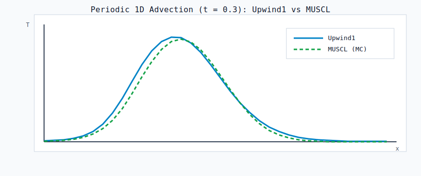

PenguinTransport.jl
PenguinTransport.jl provides cut-cell scalar transport with reduced-state unknowns on active cells.
It supports:
- Advection with
Centered,Upwind1, andMUSCLschemes. - Optional diffusion (
kappa >= 0) in the same semidiscrete system. - Time-integration via
PenguinSolverCore+ SciML. - Matrix-free steady solves via
LinearSolve.FunctionOperator.
Quick Start
using PenguinTransport
using CartesianGeometry
using CartesianOperators
using PenguinSolverCore
using LinearAlgebra
x = collect(range(0.0, 1.0; length=65))
full_domain(_x, _=0.0) = -1.0
moments = CartesianGeometry.geometric_moments(full_domain, (x,), Float64, zero; method=:implicitintegration)
bc_adv = CartesianOperators.AdvBoxBC(
(CartesianOperators.AdvPeriodic(Float64),),
(CartesianOperators.AdvPeriodic(Float64),),
)
prob = TransportProblem(;
kappa = 0.01,
bc_adv = bc_adv,
scheme = CartesianOperators.Upwind1(),
vel_omega = 1.0,
vel_gamma = 1.0,
)
sys = build_system(moments, prob)
u0 = rand(length(sys.dof_omega.indices))
du = similar(u0)
dt = cfl_dt(sys, u0; cfl=0.45)
PenguinSolverCore.rhs!(du, sys, u0, nothing, 0.0)
println(length(u0), ", dt=", dt, ", norm(du)=", norm(du))64, dt=0.0054931640625, norm(du)=6.056065699510758Documentation Map
- Equations: PDE and semidiscrete form.
- Boundary Conditions: diffusion and advection BC behavior.
- Numerics: masks, stencils, schemes, CFL guidance.
- API Reference: exported constructors/functions.
- Examples: runnable scripts.
- Validation: conservation, order, boundedness, manufactured tests.
- Design Notes: reduced-state layout, caches, and callbacks.
Figure
